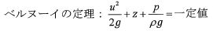

令和6年度 問33 化学プロセス
口径（内径）3.0 mmのノズルから噴水が20 mの高さに上がっている。
ベルヌーイの定理： $u^2/2g + z + p/\rho g = \text{一定値}$
$u$：流速 [$m/s$]
$g$：重力加速度 $9.8$ $m/s^2$
$z$：位置 [$m$]
$p$：圧力 [$Pa$]
$\rho$：流体密度 [$kg/m^3$]
を用いると、水の単位時間当たりの噴出量 [L / 分] の最も近い値はどれか。
ベルヌーイの定理： $u^2/2g + z + p/\rho g = \text{一定値}$
$u$：流速 [$m/s$]
$g$：重力加速度 $9.8$ $m/s^2$
$z$：位置 [$m$]
$p$：圧力 [$Pa$]
$\rho$：流体密度 [$kg/m^3$]
を用いると、水の単位時間当たりの噴出量 [L / 分] の最も近い値はどれか。

①
504
②
165
③
10.7
④
8.4
⑤
5.9
正答
④ 8.4
正答は4番です。
1. 噴出速度 $u$ の算出
ノズル出口（点1, $z=0$, $u_1=u$）と噴水の最高点（点2, $z=20$, $u_2=0$）においてベルヌーイの定理を適用します。いずれも大気圧に接しているため、圧力項は無視できます。
$\frac{u^2}{2g} = z$ より、
$u = \sqrt{2gz} = \sqrt{2 \times 9.8 \times 20} = \sqrt{392} \approx 19.8 \text{ m/s}$
2. 噴出量（体積流量）の算出
ノズルの内径 $d = 3.0 \text{ mm} = 0.003 \text{ m}$ より、断面積 $A$ は：
$A = \frac{\pi d^2}{4} = \frac{\pi \times (0.003)^2}{4} \approx 7.069 \times 10^{-6} \text{ m}^2$
毎秒の流量 $v$ [m³/s] は：
$v = A \cdot u = (7.069 \times 10^{-6}) \times 19.8 \approx 1.40 \times 10^{-4} \text{ m}^3\text{/s}$
これを [L / 分] に変換します（1 m³ = 1,000 L, 1分 = 60秒）：
$1.40 \times 10^{-4} \text{ m}^3\text{/s} \times 1,000 \text{ L/m}^3 \times 60 \text{ s/min} \approx 8.4 \text{ L/min}$
したがって、最も近い値は8.4となります。
1. 噴出速度 $u$ の算出
ノズル出口（点1, $z=0$, $u_1=u$）と噴水の最高点（点2, $z=20$, $u_2=0$）においてベルヌーイの定理を適用します。いずれも大気圧に接しているため、圧力項は無視できます。
$\frac{u^2}{2g} = z$ より、
$u = \sqrt{2gz} = \sqrt{2 \times 9.8 \times 20} = \sqrt{392} \approx 19.8 \text{ m/s}$
2. 噴出量（体積流量）の算出
ノズルの内径 $d = 3.0 \text{ mm} = 0.003 \text{ m}$ より、断面積 $A$ は：
$A = \frac{\pi d^2}{4} = \frac{\pi \times (0.003)^2}{4} \approx 7.069 \times 10^{-6} \text{ m}^2$
毎秒の流量 $v$ [m³/s] は：
$v = A \cdot u = (7.069 \times 10^{-6}) \times 19.8 \approx 1.40 \times 10^{-4} \text{ m}^3\text{/s}$
これを [L / 分] に変換します（1 m³ = 1,000 L, 1分 = 60秒）：
$1.40 \times 10^{-4} \text{ m}^3\text{/s} \times 1,000 \text{ L/m}^3 \times 60 \text{ s/min} \approx 8.4 \text{ L/min}$
したがって、最も近い値は8.4となります。